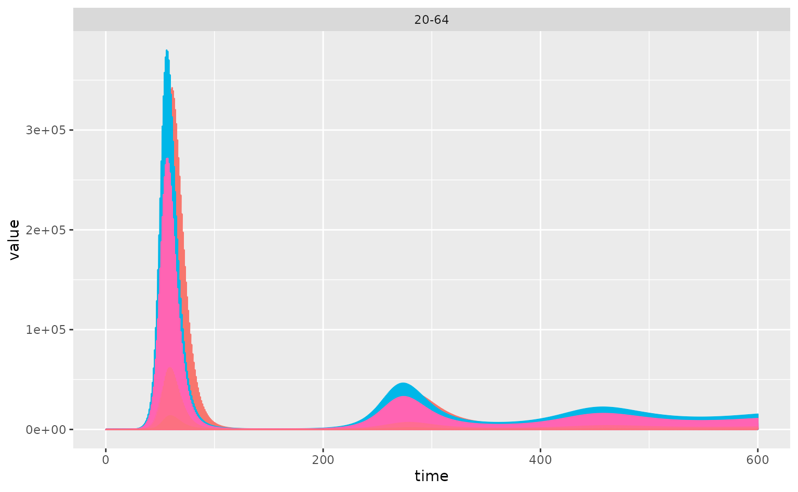

This vignette shows how to get started with the DAEDALUS model adapted from Haw et al. (2022) in R.
Representing countries and territories
The model can be run for any country or territory included in package
data simply by passing its name to daedalus(). The
country_names vector holds a list of country and territory
names for which data is available.
Passing the country name directly leads to the model accessing
country characteristics stored as package data. To modify country
characteristics, for example to examine assumptions around changed
contact patterns, users should instead create an object of the class
<daedalus_country>, which allows setting certain
country characteristics to custom values.
The class also allows users to collect country data in one place more easily.
# get default values for Canada (chosen for its short name)
daedalus_country("Canada")
#> <daedalus_country>
#> • Name: Canada
#> • Demography: 1993132, 5949109, 22966942, and 6832974
#> • Community contact matrix:
#> 0-4 5-19 20-64 65+
#> 0-4 1.9157895 1.5235823 5.014414 0.3169637
#> 5-19 0.5104463 8.7459756 6.322175 0.7948344
#> 20-64 0.4351641 1.6376280 7.821398 1.0350292
#> 65+ 0.1187166 0.7488765 3.639207 1.5142917
#> • GNI (PPP $): 46050
#> • Hospital capacity: 7989
# make a <daedalus_country> representing Canada
# and modify contact patterns
country_canada <- daedalus_country(
"Canada",
parameters = list(
contact_matrix = matrix(5, 4, 4) # uniform contacts across age groups
)
)
# print to examine; only some essential information is shown
country_canada
#> <daedalus_country>
#> • Name: Canada
#> • Demography: 1993132, 5949109, 22966942, and 6832974
#> • Community contact matrix:
#> [,1] [,2] [,3] [,4]
#> [1,] 5 5 5 5
#> [2,] 5 5 5 5
#> [3,] 5 5 5 5
#> [4,] 5 5 5 5
#> • GNI (PPP $): 46050
#> • Hospital capacity: 7989The package provides data from Walker et al.
(2020) on country demography,
country workforce per economic sector, and social contacts between age
groups in country_data. The package also provides data from
Jarvis et al. (2024) on workplace contacts in
economic sectors. Both datasets are accessed by internal functions to
reduce the need for user input.
Representing infection parameters
daedalus allows users to quickly model one of seven
historical epidemics by accessing infection parameters associated with
those epidemics, which are stored as package data. Epidemics with
associated infection parameters are given in the package as
daedalus::epidemic_names.
daedalus::epidemic_names
#> [1] "sars_cov_1" "influenza_2009" "influenza_1957"
#> [4] "influenza_1918" "sars_cov_2_pre_alpha" "sars_cov_2_omicron"
#> [7] "sars_cov_2_delta"Users can pass the epidemic names directly to daedalus()
to use the default infection parameters.
# not run
output <- daedalus("Canada", "influenza_1918")To modify infection parameters associated with an epidemic, users
should create a <daedalus_infection> class
Users can also override epidemic-specific infection parameter values
when creating the <infection> class object. The
infection() class helper function has more details on which
parameters are included.
# SARS-1 (2004) but with an R0 of 2.3
daedalus_infection("sars_cov_1", r0 = 2.3)
#> <daedalus_infection>
#> • Epidemic name: sars_cov_1
#> • R0: 2.3
#> • sigma: 0.217
#> • p_sigma: 0.867
#> • epsilon: 0.58
#> • rho: 0.003
#> • eta: 0.018, 0.082, 0.018, and 0.246
#> • omega: 0.012, 0.012, 0.012, and 0.012
#> • gamma_Ia: 0.476
#> • gamma_Is: 0.25
#> • gamma_H: 0.034, 0.034, 0.034, and 0.034
# Influenza 1918 but with mortality rising with age
daedalus_infection("influenza_1918", omega = c(0.01, 0.02, 0.03, 0.1))
#> <daedalus_infection>
#> • Epidemic name: influenza_1918
#> • R0: 2.5
#> • sigma: 0.909
#> • p_sigma: 0.669
#> • epsilon: 0.58
#> • rho: 0.003
#> • eta: 0.073, 0.064, 0.02, and 0.152
#> • omega: 0.01, 0.02, 0.03, and 0.1
#> • gamma_Ia: 0.4
#> • gamma_Is: 0.4
#> • gamma_H: 0.175, 0.175, 0.175, and 0.175Representing vaccine investment for pandemic preparedness
daedalus includes a vaccination response in the model. The default response assumes no advance, pre-pandemic investment in a vaccine specific to the pandemic-causing pathogen.
This scenario (vaccine_investment = "none") is intended
to represent the Covid-19 pandemic, and assumes that a vaccine only
becomes available 1 year after the pandemic begins, that it is slow to
roll out, and that uptake is low.
These parameters are contained in the package data
daedalus::vaccine_scenario_data, for a total of four
scenarios of advance vaccine investment (“none”, “low”, “medium”, and
“high”).
Vaccine investment scenarios can be passed a string to
daedalus() to use the default parameters for each scenario,
or as a <daedalus_vaccination> object using
daedalus_vaccination(name, <PARAMETERS>) to modify
vaccination parameters.
# the default vaccine investment scenario
daedalus_vaccination("none")
#> <daedalus_vaccination>
#> Advance vaccine investment: none
#> • Start time (days): 365
#> • Rate (% per day): 0.143
#> • Uptake limit (%): 40
#> • Efficacy (%): 5000
#> • Waning period (mean, days): 180Running the model
Run the model by passing the country and
infection arguments to daedalus(). The vaccine
investment scenarios is automatically assumed to be “none”.
# simulate a Covid-19 wild type outbreak in Canada; using default parameters
data <- daedalus("Canada", "sars_cov_2_pre_alpha")The model runs for 300 timesteps by default; timesteps should be interpreted as days since model parameters are in terms of days.
Plot the data to view the epidemic curve.
data <- get_data(data)
ggplot(
data[data$compartment == "infect_symp" & data$age_group == "20-65", ]
) +
geom_line(
aes(time, value, colour = econ_sector),
show.legend = FALSE
) +
facet_wrap(
facets = vars(age_group)
)